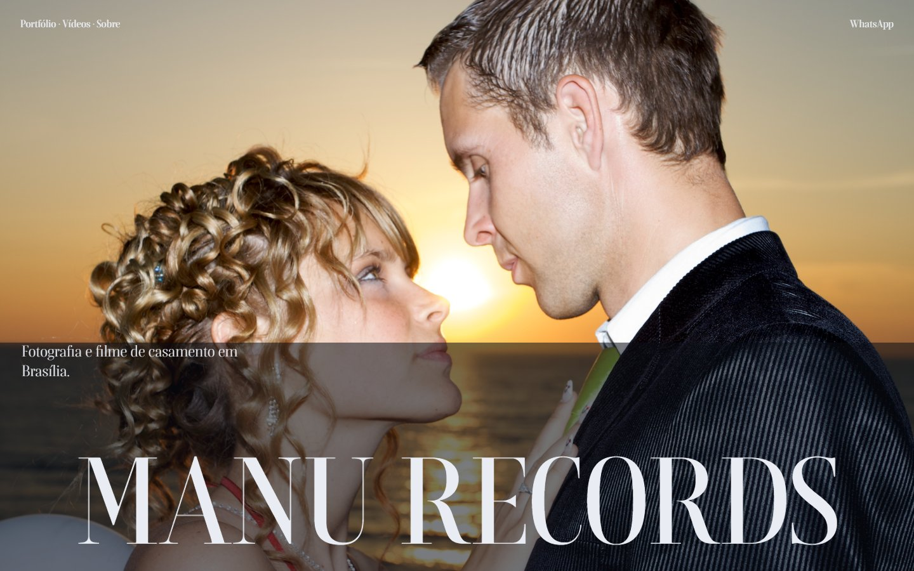
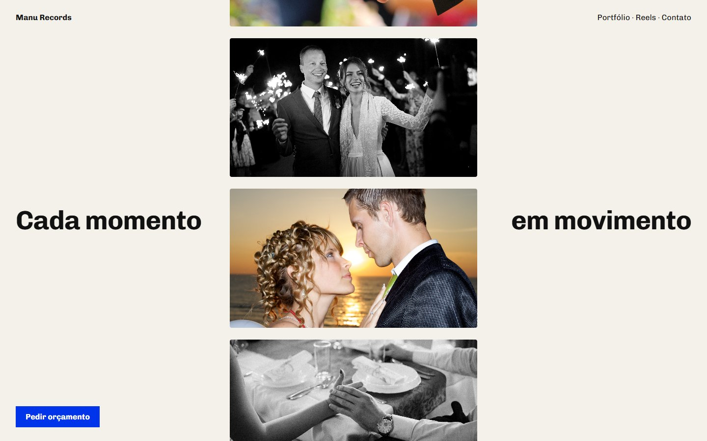
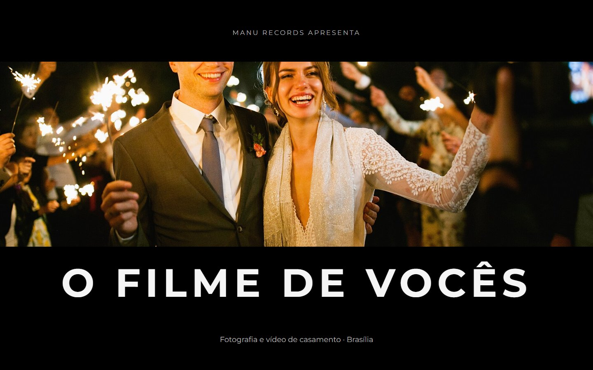
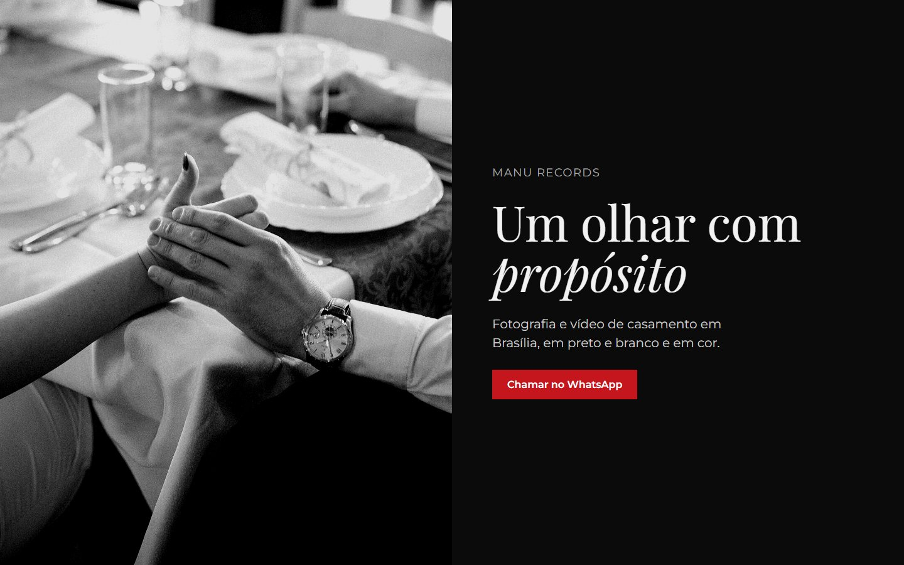

Manu Records · escolha do estilo do site
Oi, Manu! Separamos 4 estilos para o seu site. Cada página mostra como ficaria a primeira tela, já com o seu nome. As fotos são só exemplo: no site vão entrar as suas fotos e os seus vídeos.
Olhe com calma e diga qual estilo você prefere (C, F, R ou S). Também dá para misturar dois.
Fotos de exemplo: Wikimedia Commons, licenças livres (CC BY e CC BY-SA). Autores: Shixart1985, Marie Miller 224, Petar Milošević, Mikhail Kapychka e Jubair1985.
C · Título de filme

Como é: uma foto ocupa a tela toda e o nome aparece enorme na base, como o título de um filme.
Sensação: cinematográfica; combina com quem também filma.
Cores e fonte: noite e azul-centáurea · Boska (com serifa)
F · Rolo de reels

Como é: uma frase dividida nas duas bordas e, no meio, uma faixa vertical de quadros que corre como um rolo de filme ou de reels.
Sensação: moderna e cheia de movimento; destaca os vídeos.
Cores e fonte: papel claro, preto e azul · Chivo
R · Cinema preto

Como é: tela preta de cinema, com a foto em faixa larga (formato de tela de cinema) e créditos de abertura.
Sensação: cinematográfica e marcante; perfeita para abrir com um vídeo seu.
Cores e fonte: preto de cinema e cinza · Montserrat
S · Claro-escuro

Como é: metade foto em preto e branco com muito contraste, metade texto curto, e um único detalhe vermelho no botão.
Sensação: dramática e elegante; casa com as suas fotos de mãos e alianças.
Cores e fonte: preto, branco e vermelho · Playfair Display + Montserrat